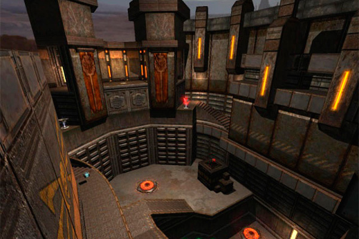
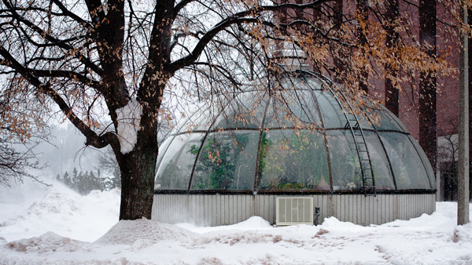
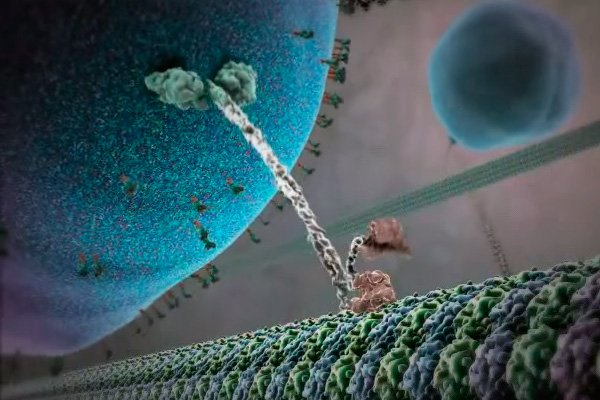

Just a blog so far

О наших принципах-ограничениях, таких как: "никогда ни с кем не партнеримся", "никаких бонусов", "никого не покупаем и никому не продаемся", "не булшитим", "не делаем скидок", "отказываемся от любой государственной поддержки", "не нанимаем людей без знаний науки (даже дизайнеров или маркетологов)", и многих других; вакансия программиста-devlead-а в Питере (ЗП 250т.р.), которому надо будет написать весь набор наших программ: библиотеку для эмулирования химических реакций, 3D визуализатор молекулярной динамики реакций, предположительно на Unity3D, виртуальную химическую лабораторию, web сайт с заданиями и социальной механикой, начинка планшета, который будет идти вместе с химическим набором; все это программист, конечно, будет писать не один, но именно он начнет работу и заложит фундамент всех этих программ.

Одна из особенностей работы в маленькой компании - это то, что все приходится делать самому. Все те вопросы, которые решались сами собой в большой компании - командировки, офис, компьютеры, договора и прочее - здесь сами собой не решаются. Я хочу найти компанию, которой можно «аутсорснуть» всю непрофильную деятельность. А если такой нет, то создать ее.
О важности правильных образов в науке и образовании; вакансия 3D-дизайнера, со знанием физики и химии; ответ на задачу, почему белье на морозе сохнет; и новая задача, про поворачивающий поезд.

Наконец-то! Компания открыта, временный офис снят, можно начинать искать людей! Первым ищу квантового химика в Петербурге (ЗП 120—150 т.р.). В виде бонуса в конце прелюбопытнейшая задача про белье на морозе.